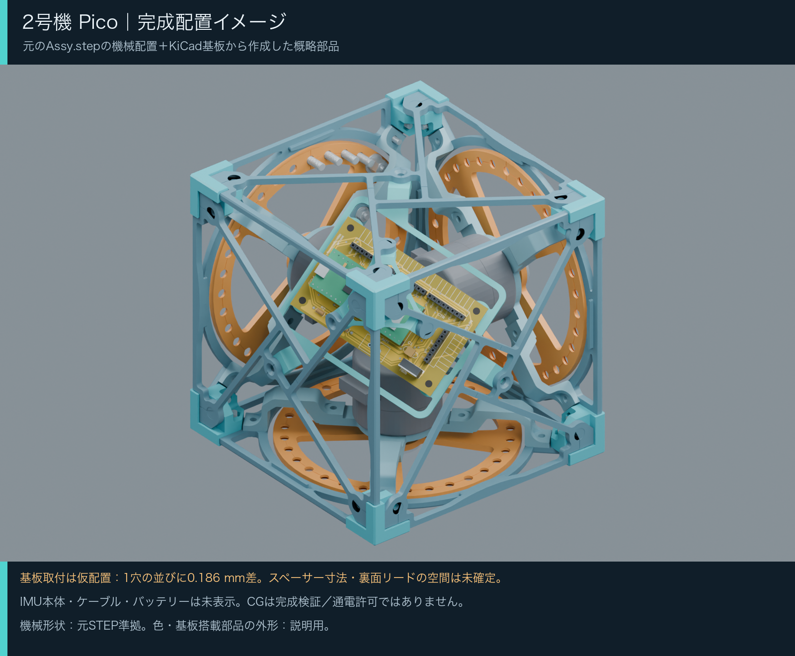
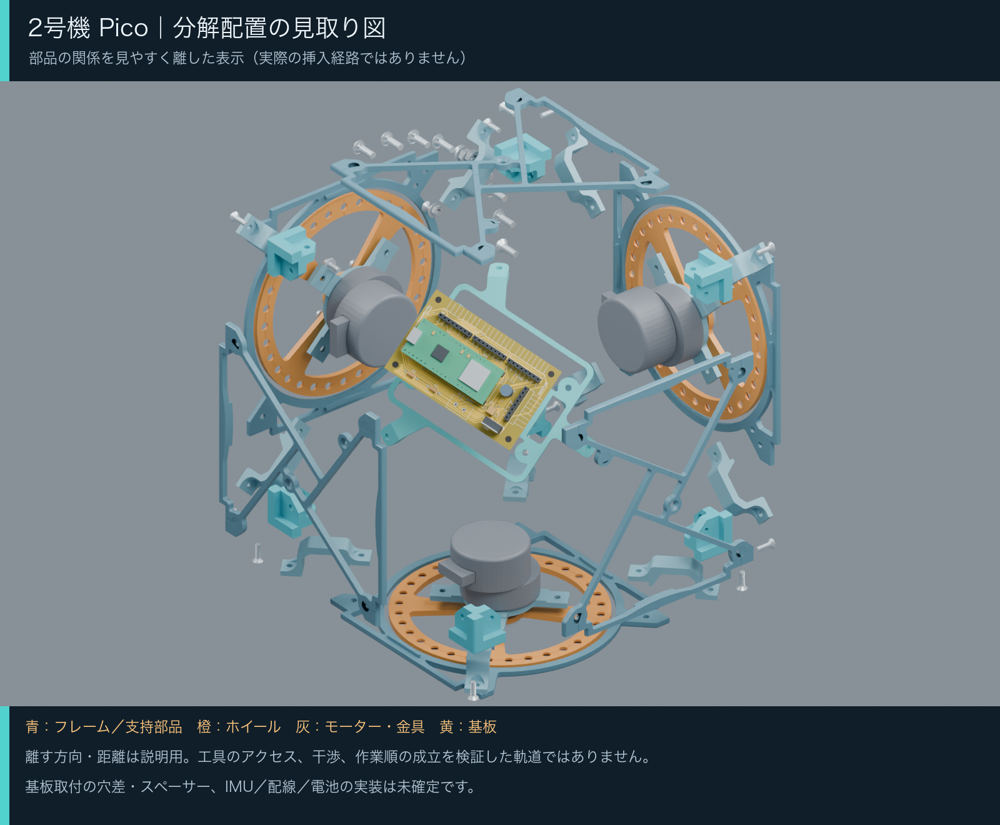
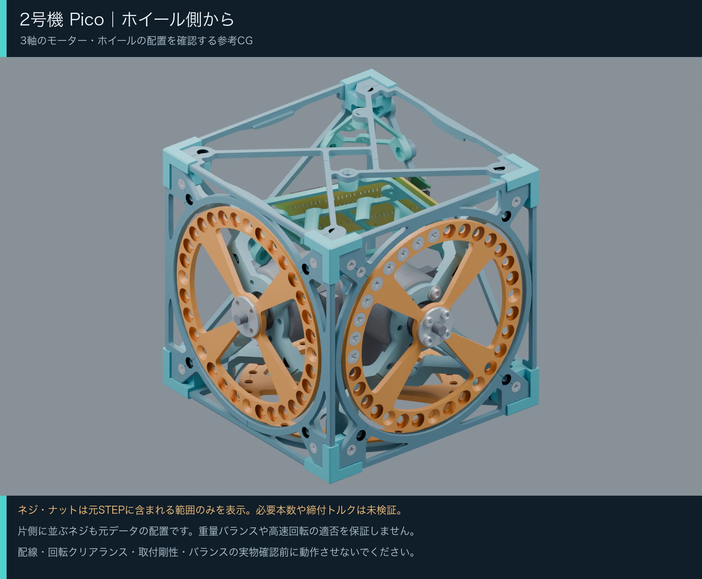
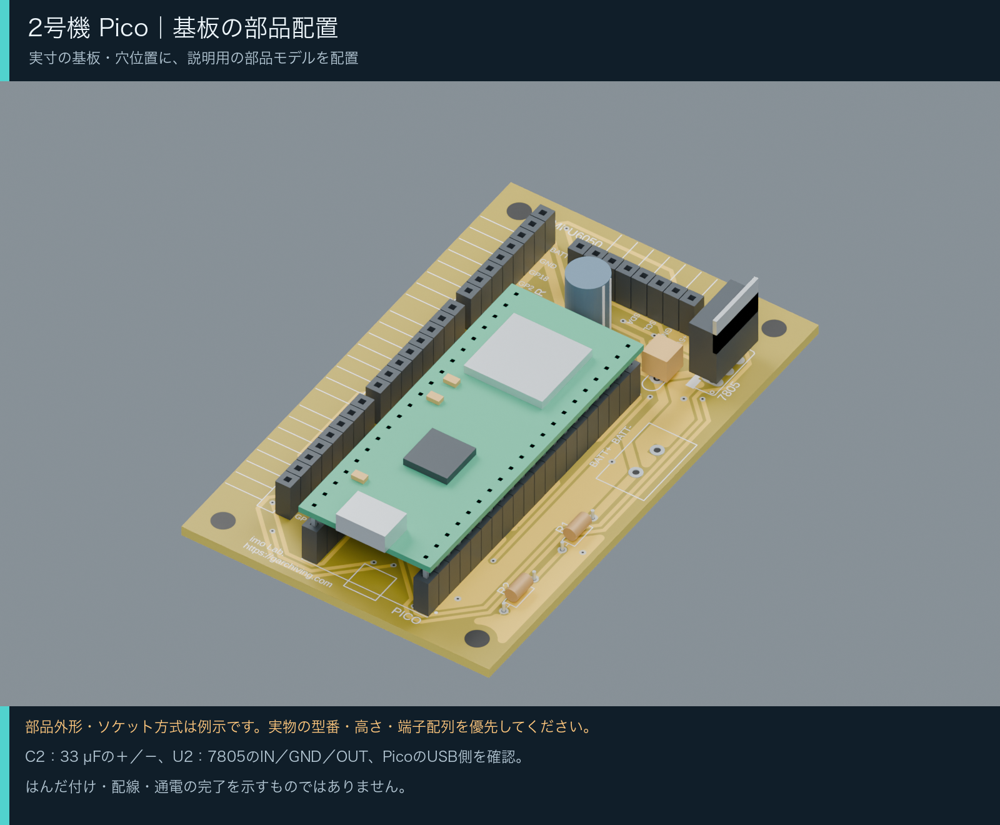

移動中の干渉
完成位置だけでなく、部品を取り付ける途中で他の部品を通り抜けないか確認します。干渉する動きを説明用の演出で済ませないことが必要です。
2号機 / PICO CUBE / OVERALL VIEW
キューブ全体の形と部品の位置関係を、周回するカメラで確認できます。組み立てでは「内側から」という順番だけでなく、部品が干渉せず、工具が入り、固定できることの確認が必要です。
本体の組み立て動画と手順案は公開を停止しています。 挿入経路に部品同士の干渉が見つかったため、以前の手順案を撤回しました。完成位置に収まるだけでは組み立て可能とは判断できません。以前の配置順を実際の組み立て手順として使用しないでください。
OVERALL VIEW / CAMERA ORBIT
全16秒・音声なし。部品はモデルの完成配置に固定し、カメラだけが周囲を回ります。部品の取り付け順や挿入経路を示す動画ではありません。
動画を読み込めませんでした。MP4の直接リンクを開くか、時間をおいて再読み込みしてください。
全体外観の参考動画をMP4で開く ↗この動画は形と配置を見るためのものです。モデル上の完成配置であり、実際に組み立てが成立することや、通電・回転の安全性を確認した映像ではありません。
基板は仮配置、電子部品の外形は概略です。IMU本体・配線・バッテリーは含まれません。
組み立て手順の検証状況へ ↓BODY / VALIDATION NEEDED
完成位置だけでなく、部品を取り付ける途中で他の部品を通り抜けないか確認します。干渉する動きを説明用の演出で済ませないことが必要です。
先に組める小さな部品群、後から取り付ける部品、ネジを締めるタイミングを整理し、工具や手が入らなくなる順序を避ける必要があります。
作業途中の部品をどう支えるか、固定具や実物の寸法が成立するかを確認する必要があります。CGの空中配置だけでは工程の成立を判断できません。
CAD上の形状確認、工具の作業空間、実物での組み立て確認は別のものです。裏付けのない工程を実行可能な手順として案内しません。
BEFORE ASSEMBLY
部品を動かす方向は説明用です。実際に挿入できる経路、工具の入り方、締結の可否は検証されていません。
基板と支持部の穴パターンには、1か所で0.186 mmのずれがあります。基板の固定方法とスペーサー寸法は未確定です。
電子部品の外形は説明用の表現です。IMU本体・ケーブル・バッテリーは含まれず、動作可能な完成構成ではありません。
この資料は安全な通電や回転を保証しません。CG上の完成状態を、動作確認済みの実機として扱わないでください。
PCB / PLACEMENT REFERENCE
KiCadベースの基板再構成を使った配置参考動画。部品外形は説明用で、実装や電気的な動作を確認した資料ではありません。
動画を読み込めませんでした。MP4の直接リンクを開くか、時間をおいて再読み込みしてください。
基板の参考動画をMP4で開く ↗REFERENCE VIEWS
画像を開くと拡大できます。



